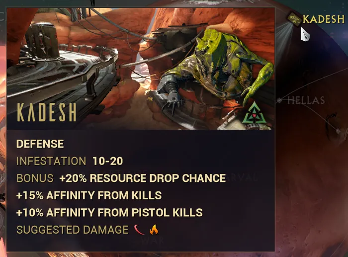
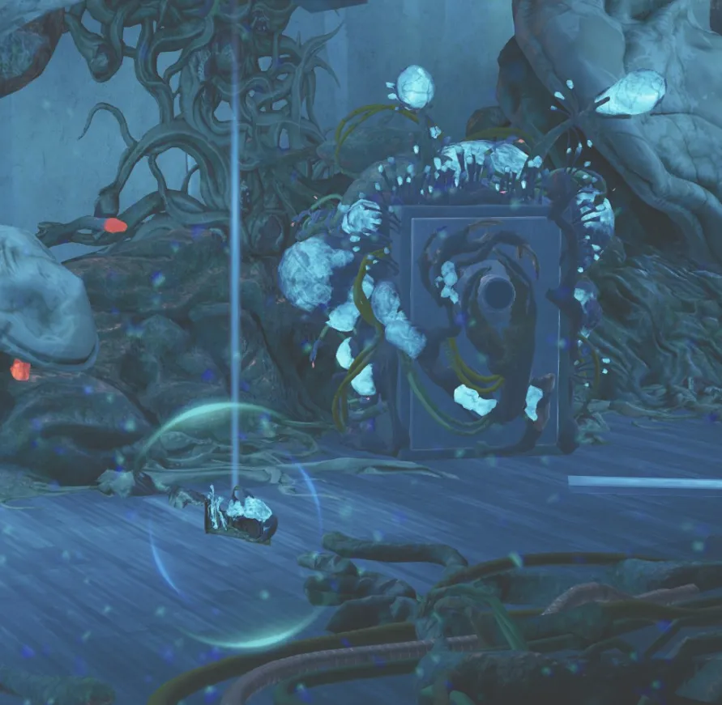

Credit Farming
Table of Contents
Overview
Credits are one of your basic currencies and are used for many things like ranking mods, buying blueprints, and crafting things in the foundry!
The farming strategies below cover some of the major/popular methods and are ordered by early accessibility, investment needed, and efficiency.
Dark Sector Missions
Dark Sector missions are a special mission type found on most of the planets in the star chart. They're characterized by a unique icon on the star chart, always having infested enemies, and giving bonuses to resource drop chance and affinity. For example on Mars, the node, Kadesh, is a dark sector mission.
On clearing the mission you'll get an extra 12-20k credits depending on the mission and level. Several of these can be done quite quickly and can be a solid way to make a few early credits.
{kind=link}

The Index
The Index is a special Corpus node on Neptune where you wager credits and fight in a Corpus arena for large sums of credits.
Credit Rewards
Before entering the Index, you must select a wager amount which affects the return and number of points:
| Risk | Wager | Return | Point Target |
|---|---|---|---|
| Low | 30,000 | 105,000 | 50 Points |
| Medium | 40,000 | 175,000 | 75 Points |
| High | 50,000 | 250,000 | 100 Points |
How to Run
To complete a round of the Index you must deposit the target number of Index points to your side before the timer runs out.
Depositing Index points increases the timer, while letting the Corpus score points will decrease it.
When an enemy is killed they drop Index points which can be picked up. Holding larger amounts of Index Points will give bonus points on deposit, but it will also give you an increasing buff called "Financial Stress". As you gain more Financial Stress you will gain a damage buff, but you will also lose energy per second, max health, and max shields. Rhino and Revenant are both great "carrier" frames that can hold a lot of Index points without risking too much survivability.
Ideally try to deposit your points after you pick up 15 Index points. As seen in the chart below, 15 points gives you the best bonus-to-points ratio compared to other bonus point tiers.
| Points Held | Bonus | Total Deposited | Efficiency |
|---|---|---|---|
| 1 | +0 | 1 | 0.0% |
| 5 | +2 | 7 | 40.0% |
| 10 | +4 | 14 | 40.0% |
| 15 | +8 | 23 | 53.3% |
| 20 | +10 | 30 | 50.0% |
After the first round, you can choose to extract or continue on to further rounds.
If you lose, you will lose ALL credits earned in previous rounds so play safe!
Forcing Map Spawns
The Index has two potential maps (an indoor and outdoor map). Players generally agree that the outdoor map has better spawn locations. To guarantee the outdoor map always happens, start the Index from a relay or your clan’s dojo.
Techrot Safes
The Techrot Safe is an object that will spawn in any Höllvania mission outside of exterminates. Opening it requires a biocode and grants 100k credits, a 1999 arcane, and a Hex Treasure.
To further improve this credit farm you ideally want to run Chroma (whose Effigy doubles nearby credit pickups), have a credit booster and credit blessing, and have a companion equipped with Prosperous Retriever, which gives an 18% chance to double every credit pickup.
Credit Rewards
| Setup | Base | With Prosperous |
|---|---|---|
| Raw | 100k | 200k |
| Chroma Only | 200k | 400k |
| Chroma + Booster | 400k | 800k |
| Chroma + Booster + Blessing | 562.5k | 1.125m |
Note: Credit blessings unexpectedly double dip with Chroma's Effigy boost, and also apply to the end-of-mission multiplier
How to run
To run this simply hop into a Höllvania mission (I recommend Köbinn West - Legacyte Capture) and:
- Search out the safe
- Find the biocode (spawns within 70m, is bright blue, makes ping noises, and can be found with the Orokin Eye air support)
- Cast Chroma's 4 (Effigy) near the safe
- Open safe
- Profit!
Note: If the Effigy is right in front of the safe, it will block you from opening the safe. Instead place it to the side or a little further away (but still within 10 meters)
After that, run the rest of the mission to completion and extract. I've also linked a youtube short guide below for visual learners!
{kind=link}

Profit Taker
Profit Taker is one of the late game bosses found in the Orb Vallis. It requires rank 5 with the Solaris United to challenge the Profit Taker and stage 4 grants 5x25k credits, a Crisma Toroid, and multiple debt bonds on completion. With a fully optimized setup, this can often be cleared in 1-2 minutes which makes this farm very efficient. Even as a semi casual player my personal average is around 3:30-4 minutes.
To further improve this credit farm you ideally want to run Chroma (whose Effigy doubles nearby credit pickups), have a credit booster and credit blessing, and have a companion equipped with Prosperous Retriever, which gives an 18% chance to double every credit pickup.
Credit Rewards
| Setup | Base | Avg With Prosperous |
|---|---|---|
| Chroma Only | 250k | 300k |
| Chroma + Booster | 500k | 600k |
| Chroma + Booster + Blessing | 703.1k | 843.75k |
Note: Credit blessings unexpectedly double dip with Chroma's Effigy boost, and also apply to the end-of-mission multiplier. Prosperous rewards were calculated assuming 1 of the 5 credit pickups gets doubled. Numbers will vary on a run to run basis.
How to run
You can queue Profit Taker from Fortuna by talking to Eudico in the backroom.
Profit Taker has several unique phases (immunity to all but one damage type, shield pylons that block shots, parts that are immune to everything but archweapons) so its best not to go into the fight blind.
To best prepare for Profit Taker, I recommend taking a look at the Profit Taker website below. Their guide does a great job of explaining all the mechanisms and talking about gearing strategies.
Profit Taker Guide by Uumm, Mebius, Iterniam, Kalaay & others
Secura Lecta Farming
The Secura Lecta will drop additional credits based on your Mastery Rank, capping out at MR18 at a 4x credit multiplier.
Additionally, when an enemy dies they are briefly 'alive' as they go through their death animation. The gas and electricity status effects from the lecta inherit its credit passive and can thus 'kill' the dying enemy multiple times, causing more credit drops.
To further improve this credit farm you ideally want to run Chroma (whose Effigy doubles nearby credit pickups), have a credit booster and credit blessing, and have a companion equipped with Prosperous Retriever. This method is by far the most efficient credit farm but is somewhat boring and does require a decent bit of investment and practice to pull off.
For a full explanation of the tech, builds, and example videos, check out the guide below.
Secura Lecta Credit Farming by Keymapperplus, BaroKachow
Top